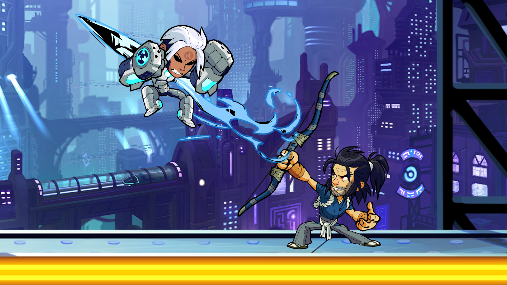
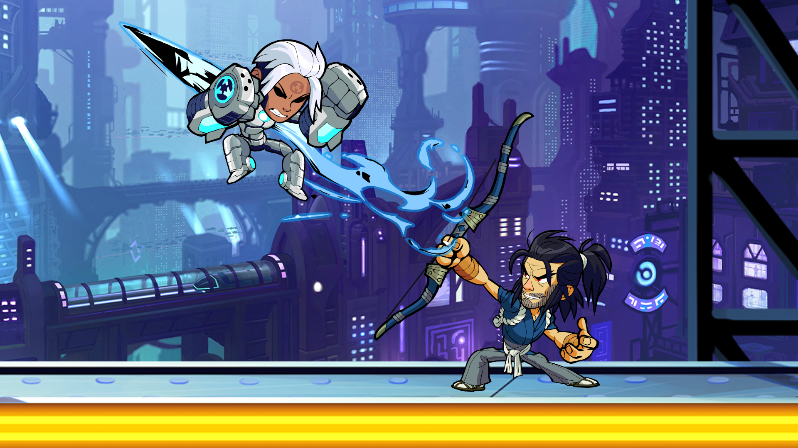
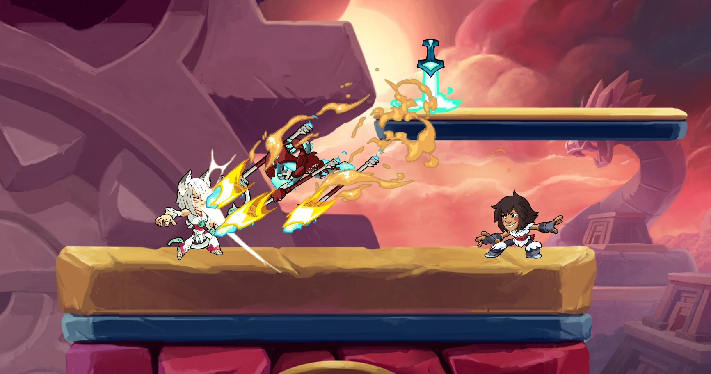
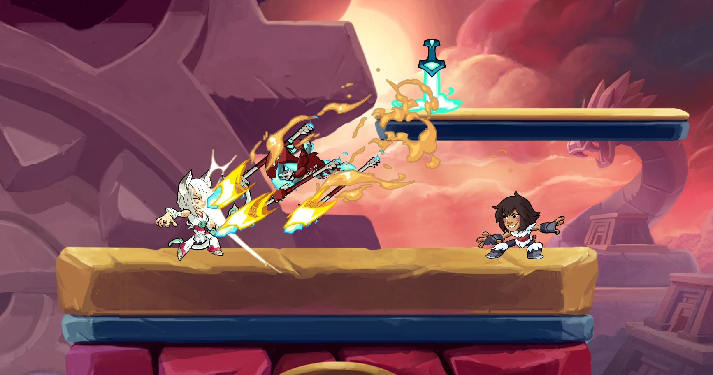

Игровой процесс
В большинстве игровых режимах Brawlhalla цель состоит в том, чтобы сбить соперника с арены
Это можно сделать нанося урон по нему.
Урон можно увидеть вокруг иконки персонажа оппонента, цвет которой сменяется с белой на красную по мере получения урона.
Чем ближе цвет к красному тем дальше игрок будет отлетать от ударов, пока он в конечном итоге не вылетит с арены.
Турниры
Небольшие турниры проводились сообществом со времени его закрытого бета-теста
Но после того как игра вышла в свет, сами разработчики начали устраивать официальные турниры
Для каждого турнира призовой фонд в размере 1000 долларов был разделен среди восьми лучших игроков.
В начале 2017 года разработчики объявили о всемирной сети официальных турниров Brawlhalla, организованных несколькими организациями
Игроки с наивысшими очками смогут забрать приз в размере 100 000 долларов
Характеристика легенд
Здесь написано о том, что такое урон, защита, скорость, выносливость и как она влияет:
В игре нет такого что можно сразу за деньги, или за игровую валюту можно прокачать свою характеристику
Если долго и упорно играя, то твоя характеристика само по себе со временем будет увеличиваться
Но также можно повысить что то одно, забрав очко у другой способности
Твоя характеристика будет определять твои сильные и слабые стороны персонажа
Примеры боя
 

 
